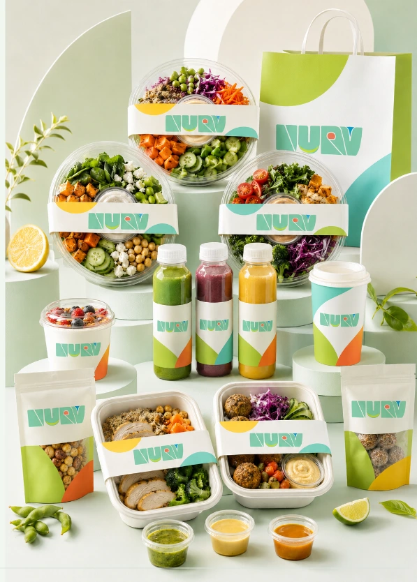

NOURISH THE GAIN
NURV
让健康轻食，
更轻盈、更有吸引力。

NOURISH THE GAIN03
PROJECT OVERVIEW / 项目概述
The project.
围绕“用营养，滋养每一天的活力”，将轻食的清新感与日常能量转化为一套完整的品牌识别、文字海报和产品包装系统。
- DISCIPLINE / 方向
- 品牌识别 / 包装系统
- ROLE / 负责内容
- 品牌识别、包装设计、视觉规范、商业应用
- DELIVERABLES / 产出
- 标志 / 色彩与字体 / 海报 / 产品包装
01品牌定位
健康，
也可以很有吸引力。
从轻食产品的日常场景出发，用轻盈的形态与明亮的颜色建立亲近的品牌感受。
用营养，滋养
每一天的活力。
用统一识别串联沙拉、饮品和随行包装，让品牌可以自然进入日常生活。
02识别系统
把轻盈与能量，
写进一个名字。
围绕品牌字标建立组合关系，以绿色为主轴，延展出适用于不同应用场景的标志版本。
FRESH#79D8B5
ENERGY#D9ED78
CORAL#EE8F76
PAPER#F8F7F1
03传播语言
轻有盈力，
好吃好自在。
以字形、留白和色彩组织传播海报，让品牌语言成为视觉记忆的一部分。
04产品与包装
一个识别，
一整套日常。
从单个包装到系列组合，让视觉系统在不同品类中保持一致。
从品牌语言，
走到实际使用。
在产品陈列、手提袋、杯型和盒型之间建立连续的识别关系，让每个触点都属于同一个品牌。
ORIGINAL PROJECT / 07 PAGES查看完整原稿
保留原有方案的全部页面。点击图片可放大查看细节。